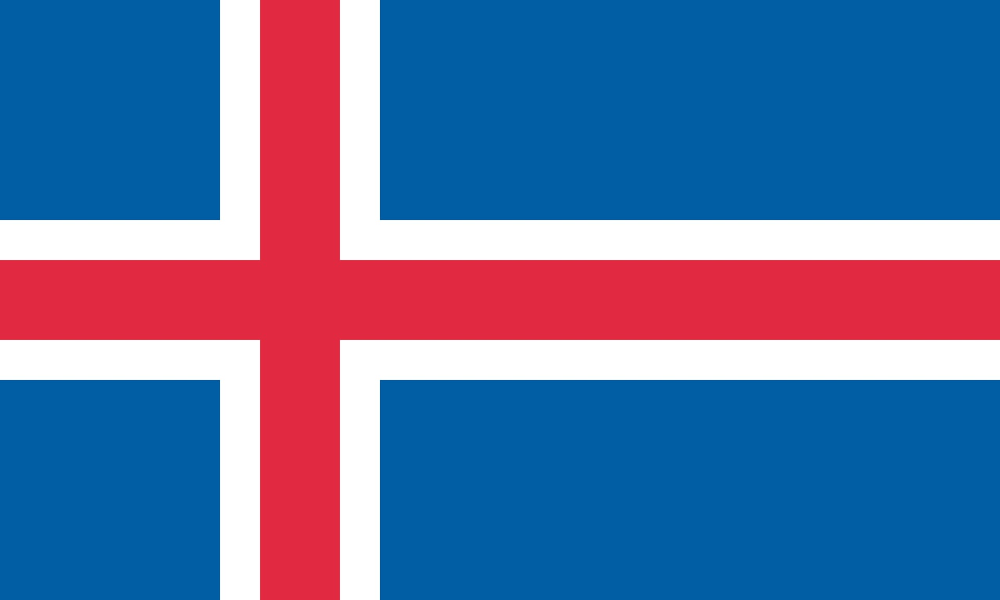

| País | Bandeira | IDH | Posição no ranking | Links |
|---|---|---|---|---|
| Suíça | 0,967 | 1º | Site oficial Wikipedia |
|
| Noruega | 0,966 | 2º | Site oficial Wikipedia |
|
| Islândia |  | 0,959 | 3º | Site oficial Wikipedia |
Para conferir a lista completa de países e sua posição clique aqui.